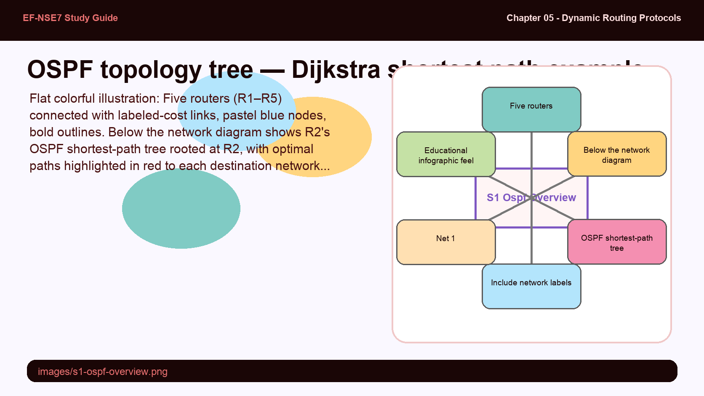
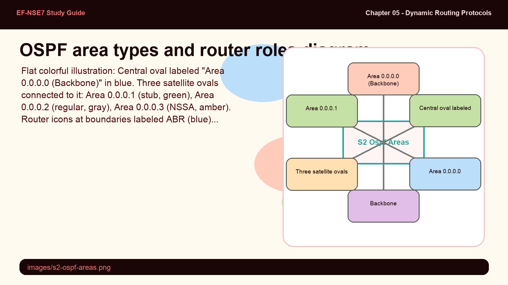
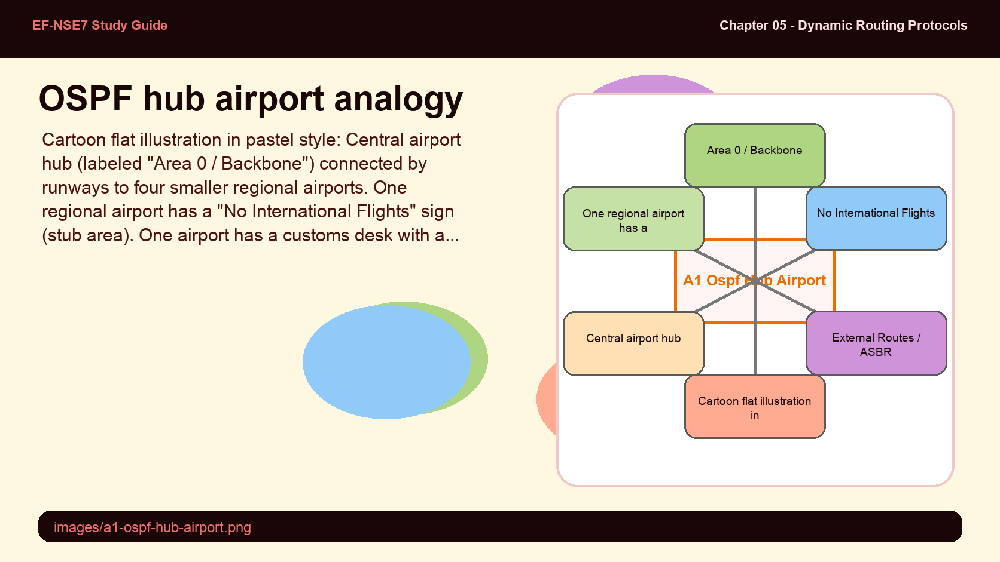
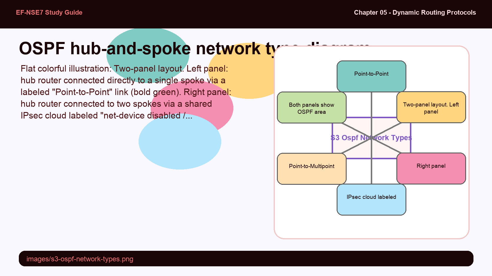
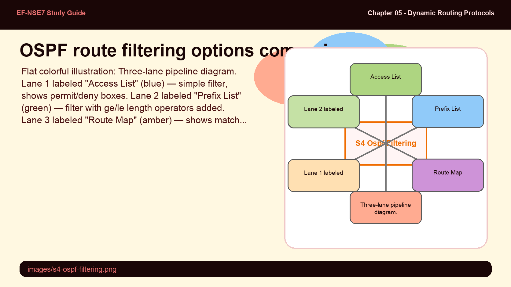
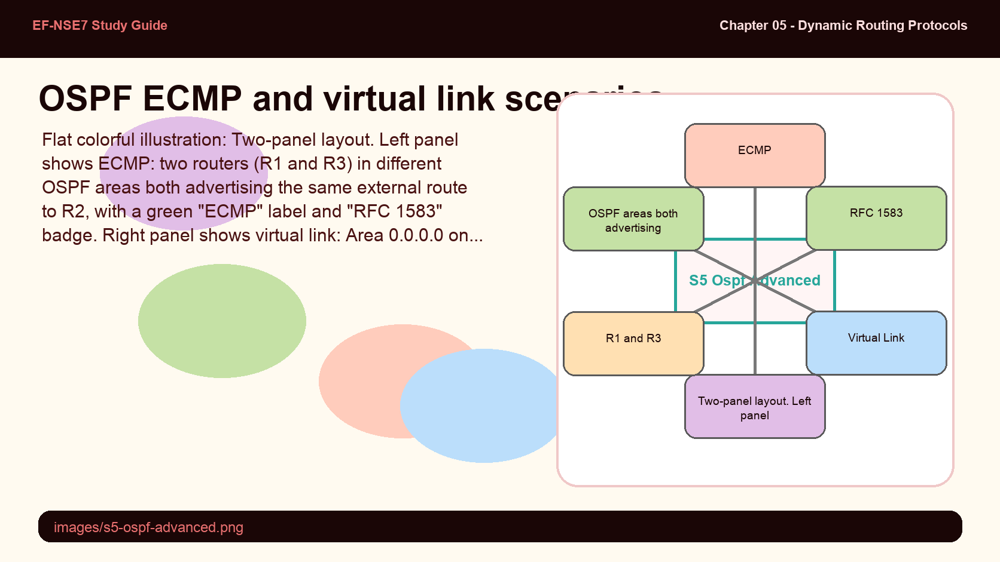

OSPF is called a "link-state" protocol because each router builds a complete map of the network topology — unlike distance-vector protocols that only know next-hop directions. Every router runs the same Dijkstra algorithm on identical data, which should produce identical results. Yet the protocol still needs periodic refreshes even when nothing changes.
- Why does OSPF need to re-advertise its information every 30 minutes even when the network topology hasn't changed at all?
- If all OSPF routers share the same LSDB and run Dijkstra independently, what could cause two routers in the same area to choose different paths to the same destination?
OSPF Overview — Link-State Fundamentals

OSPF builds a shortest-path tree per router using Dijkstra's algorithm. Each router is the root of its own tree.
OSPF (Open Shortest Path First) is a link-state routing protocol where every router maintains an identical, synchronized database — the Link State Database (LSDB) — that describes the complete network topology. Unlike distance-vector protocols such as RIP, which periodically flood their entire routing table, OSPF sends updates only when the topology changes, making it far quieter during steady-state operation.
Each router applies Dijkstra's algorithm to the LSDB to independently compute the shortest-path tree with itself as the root. This recursive process produces the best route to every known destination. OSPF refreshes its LSAs every 30 minutes regardless of changes, resetting LSA age timers to prevent entries from expiring out of the LSDB.
Key OSPF advantages include: scalability to large networks, faster convergence than distance-vector protocols, and relatively low overhead during steady-state conditions where only change-triggered updates are sent.
OSPF organizes routers into areas, with Area 0 (backbone) at the center. Area Border Routers connect non-backbone areas to Area 0, and can summarize routes between them. Autonomous System Boundary Routers inject external routes from other protocols. The area structure is what makes OSPF scale — but it also creates strict rules about how information flows.
- Why must all non-backbone OSPF areas connect to Area 0? What routing problem does the backbone area requirement solve?
- An ABR is configured with "config range" to summarize 10.10.10.0/24 instead of advertising individual /30 subnets. What is the tradeoff — what do you lose when you summarize at area boundaries?
OSPF Areas & Router Roles

All OSPF areas must connect to the backbone (Area 0). ABRs bridge non-backbone areas; ASBRs import external routes.
All OSPF networks require at least one area — Area 0 (0.0.0.0), the backbone area. Routers with at least one interface in Area 0 are backbone routers. The backbone is the mandatory transit point for all inter-area routing — no area can route to another area without passing through Area 0.
Area Border Routers (ABRs) connect non-backbone areas to the backbone. To reduce routing table size, ABRs can summarize routes using config range. For example, in a hub-and-spoke setup, setting the range to 10.10.10.0 255.255.255.0 causes the hub to advertise a single aggregate instead of individual /30 spoke subnets.
Autonomous System Boundary Routers (ASBRs) import external (non-OSPF) routes into the OSPF domain. External routes on ASBRs can be summarized using config summary-address. By default, external routes imported via OSPF are not load-balanced.
OSPF Area Types control which LSA types traverse area boundaries:
- Regular — default; receives all LSA types including external routes
- Stub — blocks external routes (Type 5 LSAs); ABR injects a default route instead; set with
set type stub - NSSA (Not-So-Stubby Area) — like stub, but allows an internal ASBR to redistribute external routes as Type 7 LSAs, which the ABR converts to Type 5 for the backbone; set with
set type nssa
config router ospf
config area
edit 0.0.0.1
set type stub
next
edit 0.0.0.3
set type nssa
next
end
endOSPF area hierarchy is like an airport hub system — all flights between regional airports must connect through a hub (Area 0), never directly.
- Area 0 (Backbone) — the international hub airport that all regional airports must connect through
- ABR — the transfer desk that knows both the regional and hub terminal layouts
- ASBR — customs and immigration — the only point where external (non-OSPF) passengers can enter the domain
- Stub area — a regional airport with no international flights; all passengers bound for "outside" take a default shuttle to the hub

OSPF network types control how neighbors are discovered and how the DR/BDR election works. The default network type on FortiGate OSPF interfaces is point-to-point, which is correct for most direct connections. But when a single IPsec interface serves as a shared hub for multiple dial-up spokes, the rules change significantly.
- Why would the default point-to-point network type break OSPF in a dial-up hub-and-spoke IPsec scenario where net-device is disabled?
- What is the advantage of point-to-multipoint over broadcast mode in an IPsec hub scenario — and when would broadcast actually be better?
OSPF Network Types — Point-to-Point vs. Point-to-Multipoint

When net-device is disabled on IPsec, the hub uses a single shared interface for all spokes — requiring point-to-multipoint network type.
The OSPF network type on an interface controls how OSPF discovers neighbors and whether a DR/BDR election occurs. The default FortiGate OSPF interface type is point-to-point, appropriate for direct connections between exactly two routers.
In a dial-up hub-and-spoke IPsec deployment where net-device is disabled, the hub creates a single shared virtual IPsec interface for all connecting spokes. All spokes share the same interface, making point-to-point unsuitable. The hub must be configured with set network-type point-to-multipoint on the To-Spokes interface to correctly model one logical link per spoke without requiring DR/BDR election.
config router ospf
config ospf-interface
edit Hub
set interface To-Spokes
set network-type point-to-multipoint
end
end
endOSPF provides three levels of route filtering: access lists (simple prefix matching), prefix lists (prefix matching with length operators), and route maps (advanced, can also modify attributes). Each applies at different points in the routing process. The redistribution mechanism allows OSPF to "absorb" routes from other protocols — but by default, nothing is redistributed, including connected routes on the ASBR.
- By default, an OSPF router does not advertise its directly connected networks to OSPF unless they are explicitly configured under "config network". What does redistribute connected do differently than adding networks manually?
- When would you choose a route map over a prefix list for OSPF route filtering, and what capability does a route map have that prefix lists cannot provide?
OSPF Route Filtering — Redistribution & Access/Prefix Lists

Three OSPF filtering tools: access lists (simple), prefix lists (with length operators), route maps (can also modify attributes).
OSPF provides protocol redistribution control through the config redistribute command. By default, all protocol redistribution — including connected routes — is disabled in OSPF. An ASBR must explicitly enable redistribution of BGP, connected, RIP, IS-IS, or static routes to inject them as external routes into OSPF.
| Filtering Method | Type | Parameter | Can Modify Attributes? |
|---|---|---|---|
| Access Lists | Simple — filter by prefix | distribute-list-in | No |
| Prefix Lists | Simple — prefix + ge/le operators | distribute-list-in | No |
| Route Maps | Advanced — match + set logic | distribute-route-map-in | Yes — metric, metric-type |
config router ospf
config redistribute connected
set status enable
end
config redistribute static
set status enable
end
endOSPF ECMP and virtual links solve two distinct scaling problems. ECMP RFC 1583 vs. RFC 2328 changes which paths are considered equal-cost. Virtual links let a disconnected area logically "reach" the backbone through another area acting as a transit — a workaround for physical topology constraints.
- OSPF defaults to RFC 2328 ECMP. When would you specifically need to enable RFC 1583 compatible mode, and what scenario does it unlock?
- A virtual link connects two ABRs through a transit area. Why can a transit area for a virtual link NOT be a stub or NSSA area?
OSPF Advanced Use Cases — ECMP, IPsec, & Virtual Links

RFC 1583 compatible mode enables ECMP for external routes. Virtual links reconnect isolated areas through a transit area.
OSPF ECMP allows FortiGate to install multiple equal-cost external routes in the routing database. By default, OSPF uses RFC 2328, which has path preference rules: intra-area paths via non-backbone areas are most preferred, then backbone/inter-area paths equally. This RFC prevents load-balancing across external routes reached via different areas.
Enabling RFC 1583 compatible mode changes path selection to be based purely on cost, regardless of area type. This allows ECMP across external routes and is recommended when reaching external destinations via multiple OSPF areas.
config router ospf
set rfc1583-compatible enable
end
# Verify ECMP routes installed:
get router info routing-table allOSPF over IPsec supports two modes: site-to-site (route-based tunnels, IPsec interfaces must be OSPF interfaces, VPN subnets in OSPF network config) and dial-up/hub-and-spoke (generic VPN setup, IPv4 range in phase1 assigns spoke IPs, hub redistributes static/connected routes).
Virtual Links solve the problem of an OSPF area that is not directly connected to Area 0. A virtual link is configured between two ABRs through a regular transit area, making the isolated area logically adjacent to the backbone. Both routers must configure the virtual link — identifying each other by router ID.
config router ospf
set router-id 2.2.2.2
config area
edit 0.0.0.3
config virtual-link
edit VLINK_area
set peer 4.4.4.4
next
end
next
end
endKey OSPF diagnostic commands:
| Command | Shows |
|---|---|
get router info ospf neighbor | All OSPF neighbors and adjacency states (DR, BDR, DROther) |
get router info ospf interface | Status per interface, number of adjacencies, DR/BDR IDs |
get router info ospf status | Router ID, features negotiated, areas, adjacent neighbor count |
get router info ospf database brief | Full LSDB ordered by LSA type |
get router info bfd neighbor | BFD negotiation status when BFD enabled on OSPF |